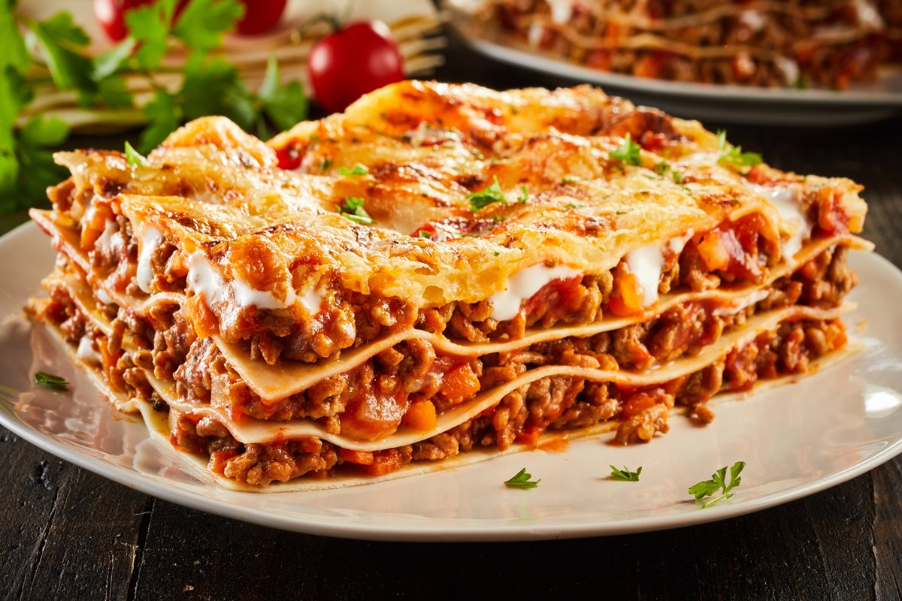

Lasagna Recipe

Description
Lasagna is a classic Italian dish that layers pasta sheets with rich meat sauce, creamy béchamel, and melted cheese. It's a comforting meal perfect for family dinners, special occasions, or whenever you're craving something hearty and satisfying.This version features a traditional beef and tomato ragù, smooth ricotta cheese, and gooey mozzarella. Baked until bubbly and golden, it's a crowd-pleaser that's worth every step of the process. Leftovers taste even better the next day!
Ingredients
- 9 lasagna noodles
- 1 tablespoon olive oil
- 1 pound ground beef
- 1 small onion, diced
- 2 cloves garlic, minced
- 1 jar (24 oz) marinara sauce
- 1 teaspoon dried oregano
- 1/2 teaspoon salt
- 1/4 teaspoon black pepper
- 1 container (15 oz) ricotta cheese
- 1 egg
- 2 cups shredded mozzarella cheese
- 1/2 cup grated Parmesan cheese
- Fresh basil for garnish (optional)
Steps
- Preheat the oven to 375°F (190°C).
- Cook lasagna noodles according to the package instructions. Drain and set aside.
- In a large skillet, heat olive oil over medium heat. Add diced onion and cook until soft. Add garlic and sauté for another minute.
- Add ground beef and cook until browned. Drain excess fat.
- Stir in marinara sauce, oregano, salt, and pepper. Simmer for 10 minutes.
- In a bowl, mix ricotta cheese with the egg until smooth.
- Spread a thin layer of meat sauce on the bottom of a 9x13 inch baking dish.
- Layer 3 noodles over the sauce, followed by half the ricotta mixture, a third of the mozzarella, and more meat sauce. Repeat layers.
- Top with final 3 noodles, remaining sauce, mozzarella, and Parmesan cheese.
- Cover with foil and bake for 25 minutes. Remove foil and bake for another 15-20 minutes, or until cheese is bubbly and golden.
- Let the lasagna rest for 10-15 minutes before slicing. Garnish with fresh basil if desired.
Home